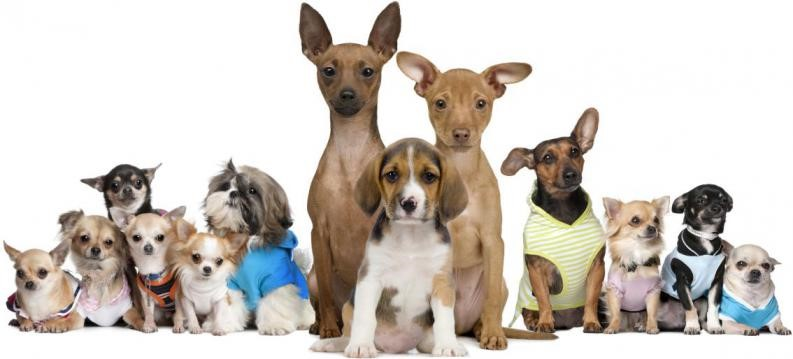
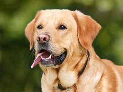

Rottweiler
El rottweiler es un perro fuerte, robusto y atlético. De talla mediana a grande, y con una apariencia que no esconde su gran poder, el rottweiler inspira una enorme admiración entre sus simpatizantes y un temor casi mítico entre quienes no lo conocen. Es indudable que la sola presencia de estos perros impone respeto y es fácil asustarse de un perro tan poderoso. No en vano la raza fue la elegida para encarnar al "perro del diablo" en la serie de películas "La Profecía".
A pesar de ser una raza versátil que se utiliza en los últimos tiempos para muchos propósitos, el rottweiler es conocido principalmente como una de las más antiguas razas de pastoreo. Una reunión de múltiples facetas y un perro de protección de valores, es capaz de trabajar todo tipo de ganado en una variedad de condiciones.
El origen de la raza se encuentra probablemente en el Imperio Romano. En aquellos tiempos, la legión romana viajó con perros de trabajo de reunir el ganado necesario para alimentar al ejército. Los antepasados principales de los primeros rottweilers durante este tiempo se cree que es el perro romano de pastoreo.
Estos perros se fueron mudando con los romanos más allá de las regiones alpinas, donde protegían a la gente y conducían el ganado, así como los perros boyeros suízos. En la región de Rottweil (origen de su nombre) en Alemania, muy próxima a Stuttgart, estos ejemplares se cruzaron con los perros nativos, de los cuales surgió una mezcla. A partir de entonces, la tarea principal del rottweiler fue la de cuidar y conducir ganado mayor y defender a su amo y sus posesiones. Su nombre, «perro de carnicero de Rottweil», lo obtuvo por la antigua ciudad imperial de Rottweil. Los carniceros lo criaban solo de acuerdo a su rendimiento y utilidad. Fue así como, al paso del tiempo, se formó una raza de protección y conducción inmejorable, a la que también se le encontró utilidad como perro de tracción.
Esta región se convirtió en un área importante de ganado, y los descendientes de los perros de ganado romanos demostraron su valor en la conducción y la protección de los bovinos de los ladrones y animales salvajes. Los rottweilers han sido utilizados por los carniceros que viajaban entre los mercados durante la Edad Media para proteger las bolsas de dinero atadas alrededor de sus cuellos. Sin embargo, como los ferrocarriles se convirtieron en el principal método para moverse, la raza disminuyó mucho y estuvo a punto de extinguirse.
Labrador Retriever

Los antepasados del labrador actual se originaron en la isla de Terranova, ahora parte de la provincia de Terranova y Labrador, Canadá. El precursor de la raza de Labrador fue el perro de aguas de San Juan, una raza que surgió a través de la cría hecha por los primeros colonos de la isla en el siglo XVI. Los antepasados de los perros de San Juan no se conocen, pero probablemente fueron una mezcla aleatoria de razas de trabajo inglesas, irlandesas y portuguesas.
Hubo dos líneas de perros de San Juan:
•Terranova mayor, era de complexión más pesada, grande y con largo pelaje, fue el precursor del perro Terranova y probablemente fue el resultado del cruce de perros de San Juan con los mastines traídos a la isla por las generaciones de pescadores portugueses que habían estado pescando en alta mar desde el siglo XVI.
•Terranova menor, era más pequeño, de complexión más liviana, activo, de pelaje corto y suave, fue el precursor del perro labrador retriever, siendo criado principalmente por los ingleses e irlandeses. Los pescadores locales originalmente utilizaron al perro para ayudar a llevar los cabos entre los barcos, ayudar a recuperar y sacar las redes de pesca del agua. La lealtad del perro, su gusto por el agua y su disposición para el trabajo duro fueron características valiosas para los pescadores. El pecho blanco, las patas, el morro y el hocico —conocidas como marcas smoking— fueron características del perro de San Juan y, a menudo, aparecen en labradores mixtos, y ocasionalmente se manifiestan en Labradores puros como un pequeño punto blanco en el pecho —conocido como medallón— o ligeros mechones de pelo blanco en las patas o en el hocico.
Durante el siglo XIX un buen número de perros de San Juan fueron llevados a la región de Poole en Inglaterra, en ese entonces uno de los centros de comercio pescadero para la alta burguesía, donde estos animales llegaron a ser apreciados como perros de caza y recobre de aves en agua. Unos pocos criaderos en Inglaterra comenzaron a reproducirlos, al mismo tiempo, en la isla de Terranova una combinación de políticas proteccionistas de la cría de ovejas —que llevó a subir de manera exorbitante los impuestos de los propietarios de perros—, aunado a la cuarentena por rabia en Inglaterra que impidió la repatriación de los perros, llevó a la desaparición gradual y consecuente extinción del perro de San Juan en su país de origen, Canadá.